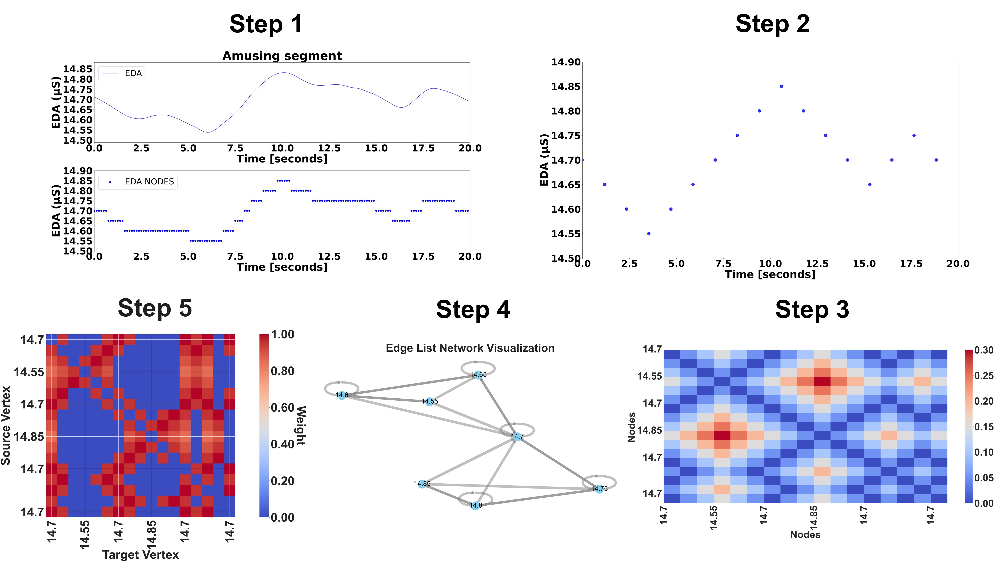
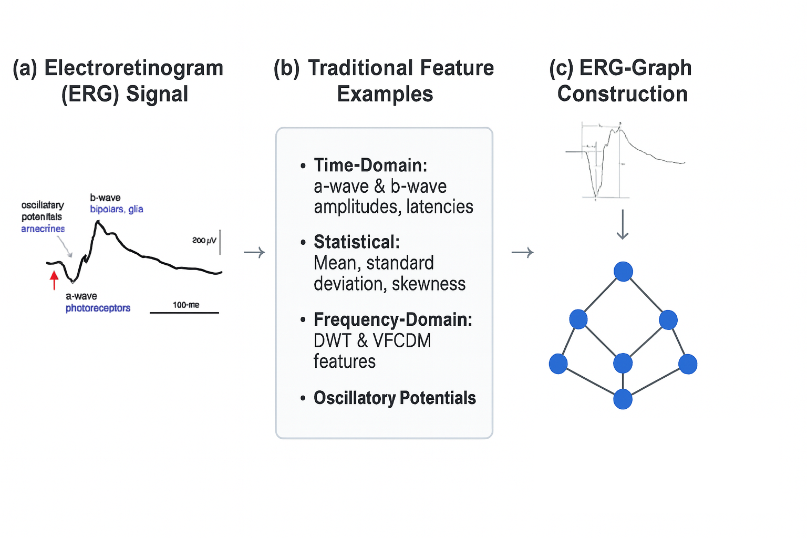
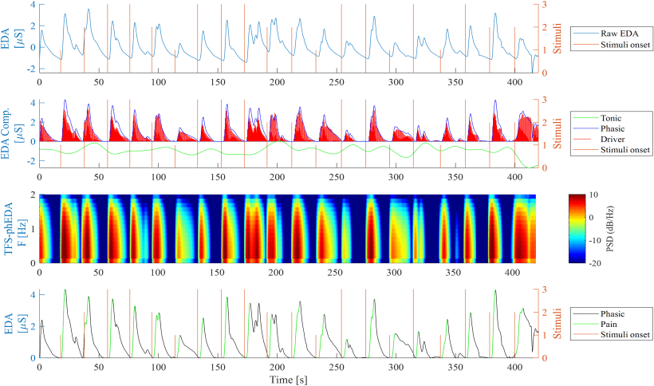
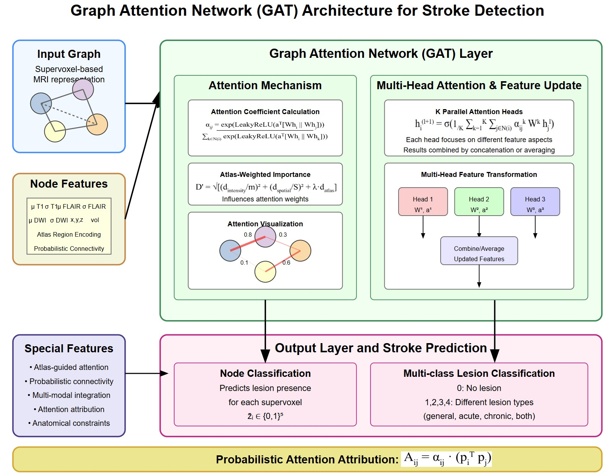

I am a Research Scientist @ UConn, where I advance next-generation AI systems and Graph Signal Processing methods. With over 8 years of research experience, I work across human-centered AI, Graph understanding, multimodal large language models, foundation models, Graph Neural Networks, wearable AI, and health-focused applications. I focus on bridging fundamental AI and real-world impact, developing technologies that advance foundational AI, accessibility, and human-AI interaction.
My strength lies in creativity, enabling me to devise novel solutions across various topics! Four selected featured research achievements:

Developed the first Graph Signal Processing method to analyze biomedical signals, introducing a novel paradigm for understanding physiological data. This approach transforms traditional time-series signals into graph structures, enabling the extraction of spatial and temporal patterns. Applied to EDA for emotion recognition, achieving state-of-the-art performance with interpretable features.

Created an innovative GSP framework for analyzing ERG signals to detect ASD and ADHD. This approach leverages graph-based representation of ERG waveforms to capture subtle abnormalities in retinal neural processing. The method demonstrates high classification accuracy while significantly reducing computational complexity, making it practical for clinical deployment.

Developed advanced deep learning architectures for multimodal biomedical signal analysis, encompassing autoencoders for nonlinear feature extraction, CNNs for time-frequency analysis, and multimodal fusion techniques integrating EDA, ERG, ECG, and PPG. Applied to emotion recognition, pain intensity classification, and arrhythmia detection.

Engineered a sophisticated GNN framework with probabilistic attention mechanisms for detecting and segmenting stroke lesions from multimodal MRI data. It represents brain imaging data as graphs and achieves superior performance in stroke lesion detection while providing interpretable attention maps that align with clinical expertise.
L. R. Mercado-Diaz, D. Aguiar, and H. F. Posada-Quintero
Neurocomputing, 131620, 2025
DOI: 10.1016/j.neucom.2025.131620S. M. Manjur, L. R. Mercado-Diaz, I. O. Lee, et al.
Journal of Autism and Developmental Disorders, 55, 1365–1378, 2025
DOI: 10.1007/s10803-024-06290-wL. R. Mercado-Diaz, N. Prakash, G. X. Gong, and H. F. Posada-Quintero
Applied Sciences, 15(7), 3653, 2025
DOI: 10.3390/app15073653J. O. Pinzon-Arenas, L. R. Mercado-Diaz, B. E. Faremi, and H. F. Posada-Quintero
Companion Proceedings of the 27th International Conference on Multimodal Interaction (ICMI '25), 2025
DOI: 10.1145/3747327.3764783L. R. Mercado-Diaz, Y. R. Veeranki, E. W. Large, and H. F. Posada-Quintero
Sensors, 24(24), 8130, 2024
DOI: 10.3390/s24248130L. R. Mercado-Diaz, Y. R. Veeranki, F. Marmolejo-Ramos, and H. F. Posada-Quintero
IEEE Journal of Biomedical and Health Informatics, 28(8), 4599-4612, 2024
DOI: 10.1109/JBHI.2024.3405491L. R. Mercado-Diaz, Y. R. Veeranki, F. Marmolejo-Ramos, and H. F. Posada-Quintero
2024 IEEE 20th International Conference on Body Sensor Networks (BSN), 2024
DOI: 10.1109/BSN63547.2024.10780627Y. R. Veeranki, L. R. Mercado-Diaz, and H. F. Posada-Quintero
2024 IEEE International Symposium on Medical Measurements and Applications (MeMeA), 2024
DOI: 10.1109/MeMeA60663.2024.10596800Y. R. Veeranki, L. R. Mercado-Diaz, R. Swaminathan, and H. F. Posada-Quintero
IEEE Sensors Journal, 24(6), 8079-8093, 2024
DOI: 10.1109/JSEN.2024.3354553J. O. Pinzon-Arenas, L. R. Mercado-Diaz, et al.
2023 11th International Conference on Affective Computing and Intelligent Interaction Workshops and Demos (ACIIW), 2023
DOI: 10.1109/ACIIW59127.2023.10388196D. Han, J. Moon, L. R. Mercado-Diaz, et al.
IEEE Transactions on Biomedical Engineering, 2025
DOI: 10.1109/TBME.2025.3613471P. A. Constable, J. O. Pinzon-Arenas, L. R. Mercado Diaz, et al.
Bioengineering, 12(1), 15, 2025
DOI: 10.3390/bioengineering12010015D. Chen, D. Han, L. R. Mercado-Díaz, J. Moon, and K. H. Chon
2024 IEEE 20th International Conference on Body Sensor Networks (BSN), 2024
DOI: 10.1109/BSN63547.2024.10780734Working as an AI research scientist during my Ph.D. program at the University of Connecticut. Developed the first Graph Signal Processing method to analyze biomedical signals and created a comprehensive framework for the analysis of biomedical signals using Graph Signal Processing techniques. Leading research initiatives in multimodal AI, graph neural networks, and their applications to healthcare and neuroscience.
Worked as a research student associated with the research group on Automation, Electronics and Computational Science. Developed various analyses of proteins using graph-based methods and machine learning approaches. Contributed to research on protein interactions using Support Vector Machine-based techniques and metabolomics analysis using MAIT package and deep learning-based methods.